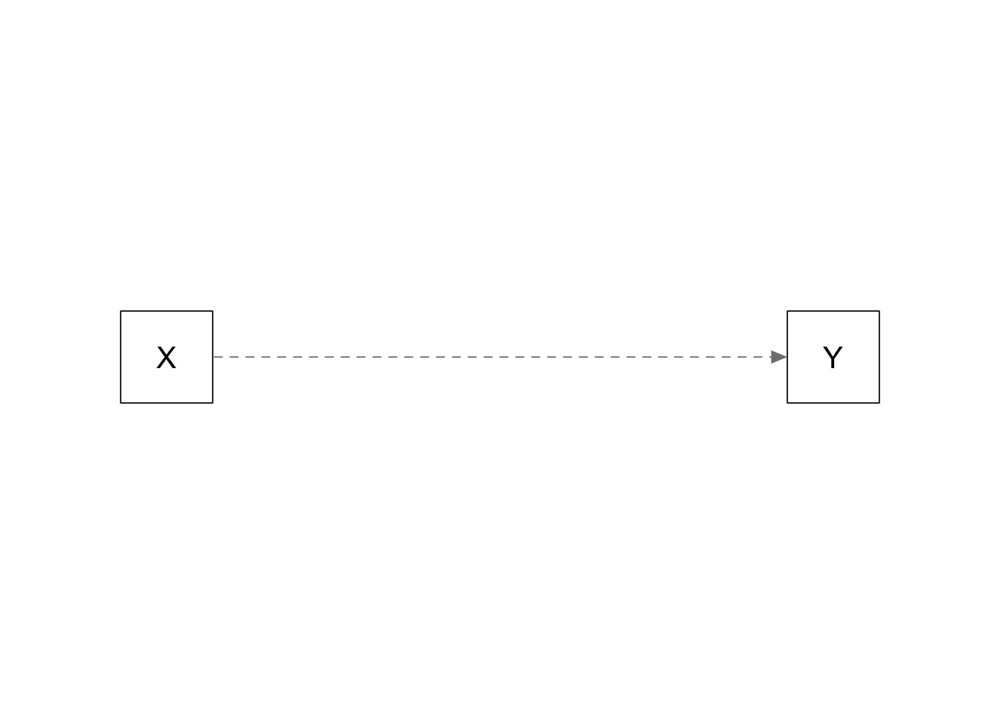
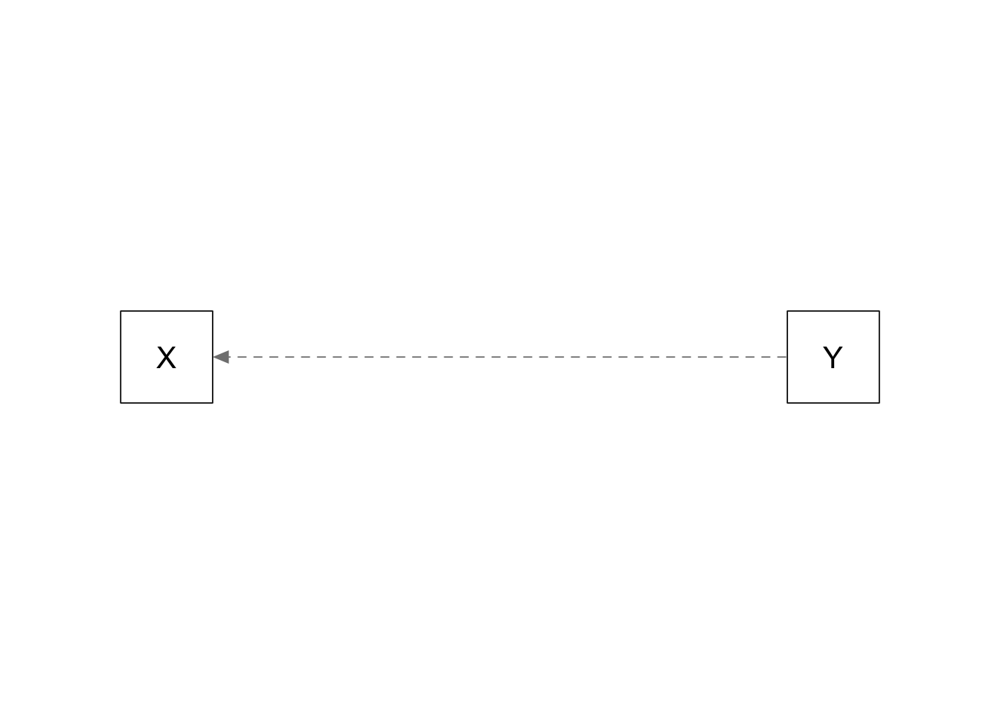
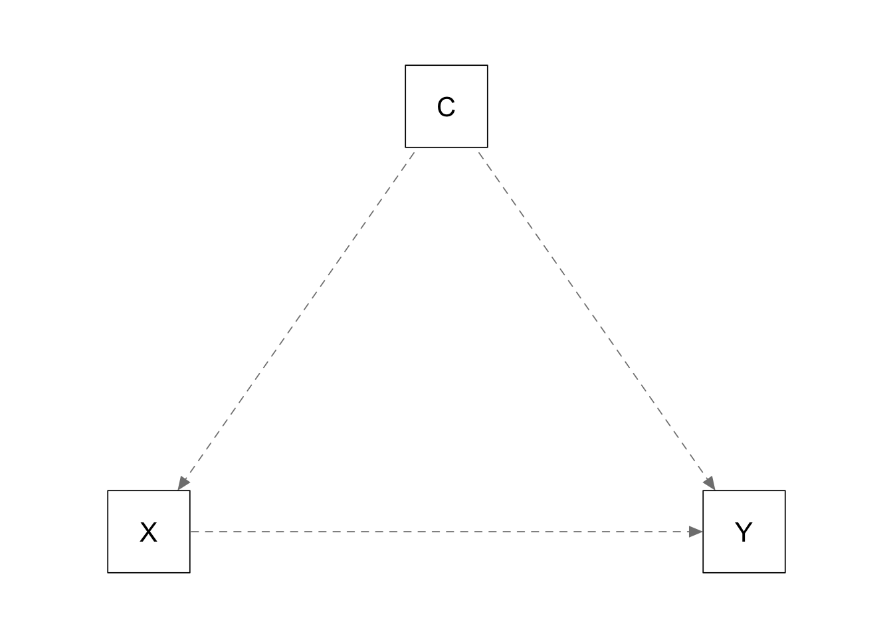
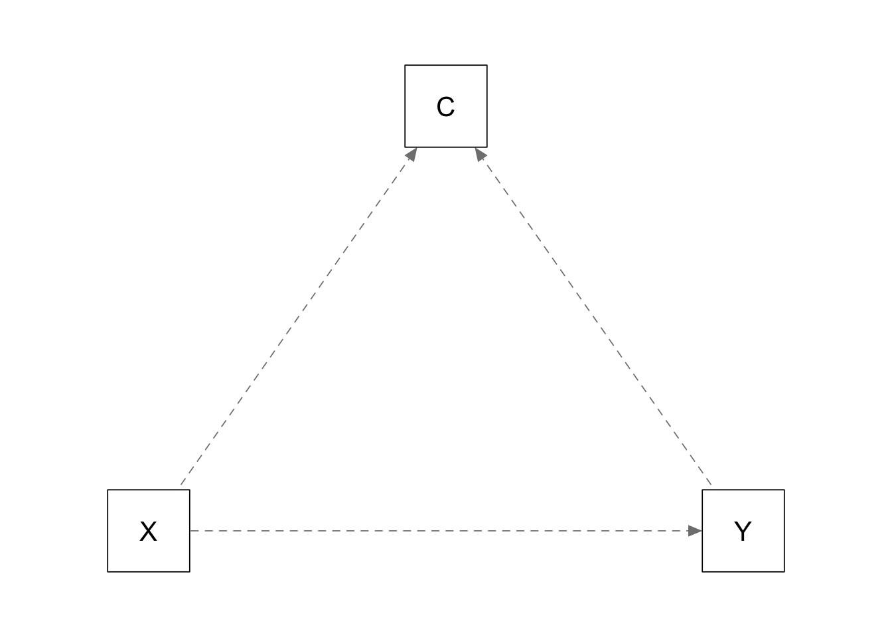

library(tidyr)
library(dplyr)
library(purrr)
library(parameters)
library(lavaan)
library(semPlot)20 Regression assumes causality ✎ Very rough draft
20.1 Dependencies
20.2 Functions
generate_data <- function(n, population_model) {
data <- lavaan::simulateData(model = population_model, sample.nobs = n)
return(data)
}
analyse <- function(data, model) {
# specify and fit model
fit <- sem(model = model, data = data)
#fit <- lm(formula = mode, data = data)
# extract regression beta estimates
results <- parameters::model_parameters(fit, standardize = FALSE) |>
filter(To == "Y" & From == "X") |> # this corresponds to the Y ~ X effect
select(beta = Coefficient,
ci_lower = CI_low,
ci_upper = CI_high,
p)
return(results)
}
plots_causal <- function(model){
generate_data(n = 300, population_model = model) %>%
sem(model = model, data = .) |>
semPaths(whatLabels = "diagram",
layout = layout_matrix,
residuals = FALSE,
edge.label.cex = 1.2,
sizeMan = 10)
}20.3 Does regression assume causality?
20.3.1 Plots
Simple regression: X causes Y
# simple regression
layout_matrix <- matrix(c( 1, 0,
-1, 0),
ncol = 2,
byrow = TRUE)
plots_causal("Y ~ 0.5*X")
Simple regression: Y causes X
# simple regression
layout_matrix <- matrix(c(-1, 0,
1, 0),
ncol = 2,
byrow = TRUE)
plots_causal("X ~ 0.5*Y")
20.3.2 Run simulation
experiment_parameters_grid <- expand_grid(
n = 200,
population_model = c("Y ~ 0.5*X",
"X ~ 0.5*Y"),
analyse_model = "Y ~ X",
iteration = 1:1000
)
set.seed(42)
simulation <-
# using the experiment parameters...
experiment_parameters_grid |>
# ...generate data...
mutate(generated_data = pmap(list(n = n,
population_model = population_model),
generate_data)) |>
# ...analyze data
mutate(results = pmap(list(data = generated_data,
model = analyse_model),
analyse))20.3.3 Summarize results
simulation_summary <- simulation |>
unnest(results) |>
group_by(n,
population_model,
analyse_model) |>
summarize(mean_beta = mean(beta),
proportion_signficiant = mean(p < .05))
simulation_summary |>
mutate_if(is.numeric, janitor::round_half_up, digits = 2)| n | population_model | analyse_model | mean_beta | proportion_signficiant |
|---|---|---|---|---|
| 200 | X ~ 0.5*Y | Y ~ X | 0.4 | 1 |
| 200 | Y ~ 0.5*X | Y ~ X | 0.5 | 1 |
20.4 Collider
20.4.1 Plots
Covariate is a confounder:
layout_matrix <- matrix(c( 1, 0,
-1, 0,
0, 1),
ncol = 2,
byrow = TRUE)
plots_causal("Y ~ 0.0*X + 0.5*C; X ~ 0.5*C")
Confounder is a collider:
layout_matrix <- matrix(c( 0, 1,
1, 0,
-1, 0),
ncol = 2,
byrow = TRUE)
plots_causal("C ~ 0.5*X + 0.5*Y; Y ~ 0.0*X")
20.4.2 Run simulation
experiment_parameters_grid <- expand_grid(
n = 200,
population_model = c("Y ~ 0.5*X + 0.0*C",
"C ~ 0.5*X + 0.5*Y; Y ~~ 0.0*X"),
analyse_model = "Y ~ X + C",
iteration = 1:1000
)
set.seed(42)
simulation <-
# using the experiment parameters...
experiment_parameters_grid |>
# ...generate data...
mutate(generated_data = pmap(list(n = n,
population_model = population_model),
generate_data)) |>
# ...analyze data
mutate(results = pmap(list(data = generated_data,
model = analyse_model),
analyse))20.4.3 Summarize results
simulation_summary <- simulation |>
unnest(results) |>
group_by(n,
population_model,
analyse_model) |>
summarize(mean_beta = mean(beta),
proportion_signficiant = mean(p < .05))
simulation_summary |>
mutate_if(is.numeric, janitor::round_half_up, digits = 2)| n | population_model | analyse_model | mean_beta | proportion_signficiant |
|---|---|---|---|---|
| 200 | C ~ 0.5X + 0.5Y; Y ~~ 0.0*X | Y ~ X + C | -0.2 | 0.82 |
| 200 | Y ~ 0.5X + 0.0C | Y ~ X + C | 0.5 | 1.00 |